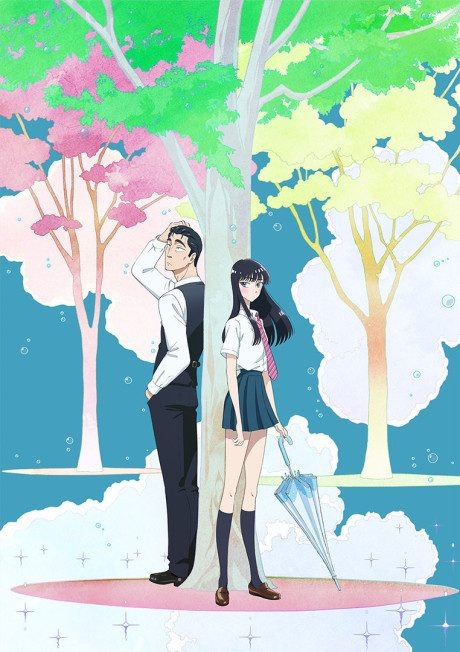
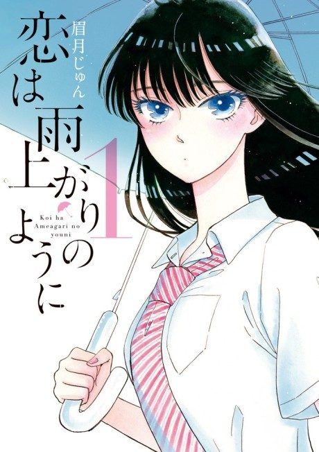

Anime
Manga2018 · Drama, Romance, Slice of Life
After the Rain
恋は雨上がりのように
AniList7.3
Animeter—
Episodes12 ep
MangaCh. 40
Anime finished. Where does the manga pick up?
Start at Chapter40
The anime covers most of Volume 3 and ends with an anime-original finale (episodes 11-12). Continue at Chapter 40, or at Chapter 25 to catch skipped material.